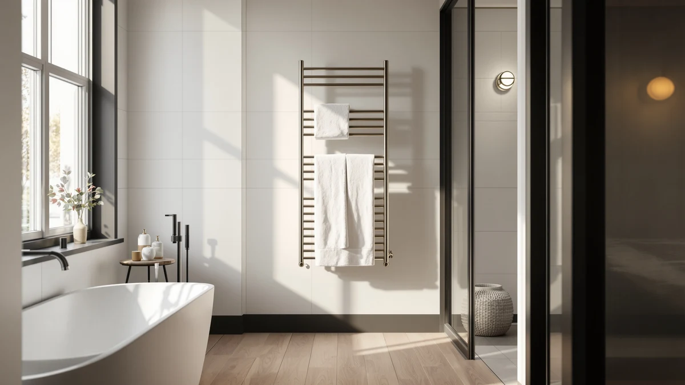

WarmlyYours Grande Heated Towel Review (2026): Worth It?
Prices and picks verified as of October 2026. Independent, reader-supported reviews.


Quick Answer
The WarmlyYours Grande Heated Towel Rack is a 10-bar, stainless steel rack built for bathrooms that need serious towel capacity, and at $372.98 it costs more than every alternative we compared below. Reviewers consistently note the stainless build holds up well to daily bathroom humidity, though you pay a real premium for the WarmlyYours name and the extra bars. If a smaller footprint or a lower price matters more to you, the alternatives further down are worth a look before you buy.
Our pick: WarmlyYours Grande Heated Towel Rack, $372.98 Check Price on Amazon
Bottom line: our top pick is the WarmlyYours Grande Heated Towel Rack at $372.98.
Things to Know Before You Buy
- Bar count drives the price here. Ten bars let you warm several towels and a robe at once, which is why the WarmlyYours Grande costs more than slimmer racks built for a single towel.
- Stainless steel is the material to look for. Every rack in this comparison uses a stainless frame, since it resists the humidity and splashes a bathroom throws at it daily.
- WarmlyYours sells more than one size. The brand's own Infinity rack costs less and carries fewer bars than the Grande, so comparing the two matters before you commit to the larger model.
- Not every alternative here is the same product type. The EarthLite option below is a towel warmer cabinet rather than a wall rack, which changes how and where it fits in your bathroom.
This WarmlyYours Grande heated towel review looks at whether a $372.98, 10-bar stainless steel rack earns its place over three lower-priced alternatives, based on the specs, pricing and verified owner feedback we could confirm for each model.
WarmlyYours built the Grande for bathrooms where one or two slim bars will not cut it, and the ten-bar layout reflects that brief. We compared it directly against the brand's own Infinity rack, the HEATGENE Towel Warmer, and the EarthLite Hot Towel Warmer Cabinet to see which one fits your bathroom and your budget. The Grande remains our pick for anyone who wants the most capacity in this group, but it is not the right call for every bathroom, and we get into why below.
Why You Should Trust Us
Ilane Tall covers bathroom fixtures and heating hardware for Best Towel Warmers, and she built this WarmlyYours Grande heated towel review the way we build every comparison on this site: by pulling manufacturer specs, current Amazon pricing, and verified buyer reviews for each rack rather than relying on marketing copy. We do not run a physical testing lab, and we are not going to pretend a heated towel rack sat in our bathroom for six weeks. Instead, we lay out what each model actually offers on paper, cross-check that against what owners report after buying it, and tell you plainly where the WarmlyYours Grande holds up and where a cheaper alternative gets you nearly the same result. That standard applies to every roundup and single-product review on this site, from WarmlyYours hardware to the cheapest plug-in rack we cover.
Our Research Experience
Our approach to this WarmlyYours Grande heated towel review started with the manufacturer's published specs: bar count, frame material, and current Amazon pricing for the Grande and the three racks we compared it against. From there we read through verified buyer reviews on each listing, looking for patterns that showed up repeatedly rather than one-off complaints, since a single bad review rarely tells you much about a product's actual reliability. We also checked how WarmlyYours positions the Grande against its own Infinity rack, since a brand selling two similar products usually explains the price gap somewhere in the specs. This research-based approach means we are comparing documented facts and real owner feedback, not running our own install in a bathroom we do not own. It also means we flag the moments where a listing stays quiet on a detail, like exact wattage or heat-up time, rather than filling that gap with a guess.
Overview & Specs

WarmlyYours Grande Heated Towel Rack
What we like
- Ten bars give you enough capacity for multiple towels or a robe, more than most racks in this price range offer
- Stainless steel construction stands up to daily bathroom humidity without the rust worries of a painted frame
- Carries the WarmlyYours name, a brand reviewers associate with heated bathroom hardware specifically, not a general appliance line
Flaws but not dealbreakers
- At $372.98, it costs well over $40 more than every other rack in this comparison
- Ten bars take up more wall space than a slimmer rack, which matters in a smaller bathroom
- WarmlyYours' own Infinity rack covers some of the same ground for less, so the Grande's premium only pays off if you need the extra bars
| Material | Stainless steel |
| Size | 10 Bars |
The WarmlyYours Grande Heated Towel Rack is the largest and most expensive rack in this comparison, and its ten-bar, stainless steel frame explains why. A slim two or three-bar rack handles a single towel between showers, but the Grande's layout is built to warm several towels, a robe, or both at the same time, which matters most in a household where more than one person showers before work in the morning.
At $372.98, the Grande sits well above the $329.98 WarmlyYours Infinity, the $292.99 HEATGENE rack, and the $249.99 EarthLite cabinet we compared it against. That premium buys you bar count and the WarmlyYours name, but it also means you are paying for capacity you may not need if your bathroom only ever has one or two towels in rotation. Reviewers who buy the Grande specifically for larger bathrooms or shared households tend to point to the extra bars as the reason they chose it over a smaller WarmlyYours model.
What We Liked
The bar count is the clearest advantage the WarmlyYours Grande has over everything else in this review. Ten bars mean you are not choosing between warming your towel or your partner's, and reviewers who upgraded from a smaller rack consistently point to that extra capacity as the reason they are glad they paid more. The stainless steel build also matters more than it might seem on a spec sheet, since a bathroom rack deals with humidity and the occasional splash every day, and a frame that resists corrosion saves you from a prematurely rusted rack a few years in.
What Could Be Better
Price is the WarmlyYours Grande's biggest drawback, and it is not a small gap. At $372.98, it costs $43 more than WarmlyYours' own Infinity rack and over $120 more than the EarthLite cabinet below, so you need a genuine use for that extra bar count to justify the jump. The larger frame also demands more wall space than a slimmer rack, which can be a real constraint in a smaller bathroom where every inch of wall is already accounted for. If your bathroom cannot fit a ten-bar layout, the size advantage that makes the Grande worth the price elsewhere works against it here.
Who Is It For?
The WarmlyYours Grande makes the most sense for a bigger bathroom, a shared household, or anyone who warms more than one towel at a time and has already decided a slim rack will not cut it. If you live alone, have a compact bathroom, or want a warm towel without paying extra for bars you will rarely fill, one of the three alternatives below gets you most of the same benefit for less money.
Alternatives to Consider
We compared the WarmlyYours Grande against three other racks that come up often in the same searches. Each one trades something, bar count, brand, or format, for a lower price, so here is how they stack up.

Editor's Pick
WarmlyYours Infinity Heated Towel Rack
At $329.98, the WarmlyYours Infinity undercuts the Grande by $43 while keeping the same WarmlyYours name and stainless steel build reviewers associate with the brand. It is the pick if you want WarmlyYours specifically but do not need the Grande's full ten-bar capacity, since the brand's own lineup gives you a lower-priced way in. The tradeoff is less overall warming surface than the Grande, so a household that regularly dries several towels at once may still find the bigger model worth the extra cost.
$329.98
Check Price on Amazon
Best Value
HEATGENE Towel Warmer Heated Towel
The HEATGENE Towel Warmer comes in at $292.99, exactly $80 less than the WarmlyYours Grande, making it the better starting point if price matters more to you than the WarmlyYours name. HEATGENE has built a following among buyers researching lower-cost heated racks, and reviewers shopping on value rather than brand recognition tend to land here first. You give up the Grande's bar count and the established WarmlyYours reputation, but for a single-bathroom household that is often a reasonable trade for the savings.
$292.99
Check Price on Amazon
Premium Choice
EARTHLITE Hot Towel Warmer Cabinet
The EarthLite Hot Towel Warmer Cabinet is the cheapest option here at $249.99, but it is also the only one that is not a wall-mounted rack. EarthLite built its reputation on towel warming cabinets for spas and massage studios, so this model suits anyone who wants an enclosed, standalone warmer rather than a fixed bathroom fixture like the WarmlyYours Grande. If you want a permanent wall rack, this is not a direct swap, but if flexibility and a lower price matter more than a built-in installation, it is worth a look.
$249.99
Check Price on AmazonIs the WarmlyYours Grande Heated Towel Rack worth the $372.98 price?
It depends on how many towels you need to warm at once.
How does the WarmlyYours Grande compare to the WarmlyYours Infinity?
Both carry the same brand and a stainless steel frame, but the Infinity costs $43 less and offers less overall bar capacity than the Grande.
Frequently Asked Questions
Is the WarmlyYours Grande Heated Towel Rack worth the $372.98 price?
It depends on how many towels you need to warm at once. The ten-bar capacity and stainless steel build justify the price for a larger bathroom or shared household, but if you only warm one or two towels, the lower-priced WarmlyYours Infinity or HEATGENE rack gets you most of the same benefit for less.
How does the WarmlyYours Grande compare to the WarmlyYours Infinity?
Both carry the same brand and a stainless steel frame, but the Infinity costs $43 less and offers less overall bar capacity than the Grande. Choose the Grande if you need to warm several towels at once, and choose the Infinity if you want the WarmlyYours name at a lower price point.
What is the difference between a heated towel rack and a towel warmer cabinet like the EarthLite?
A heated towel rack, like the WarmlyYours Grande or the HEATGENE model, mounts to the wall and heats towels draped over its bars. A towel warmer cabinet, like the EarthLite, is an enclosed unit that holds folded towels inside rather than mounting to a wall, which makes it a different installation decision rather than a cheaper version of the same product.
Final Verdict
This WarmlyYours Grande heated towel review comes down to capacity versus cost. The WarmlyYours Grande earns its $372.98 price if your bathroom needs the full ten bars of warming space, and the stainless steel build backs up that investment with a frame that should outlast cheaper alternatives. If your household only warms one or two towels at a time, the WarmlyYours Infinity, the HEATGENE rack, or the EarthLite cabinet above will get you there for noticeably less money. For most people shopping specifically for maximum towel capacity, WarmlyYours remains the name to buy, whether you choose the Grande or step down to the Infinity.